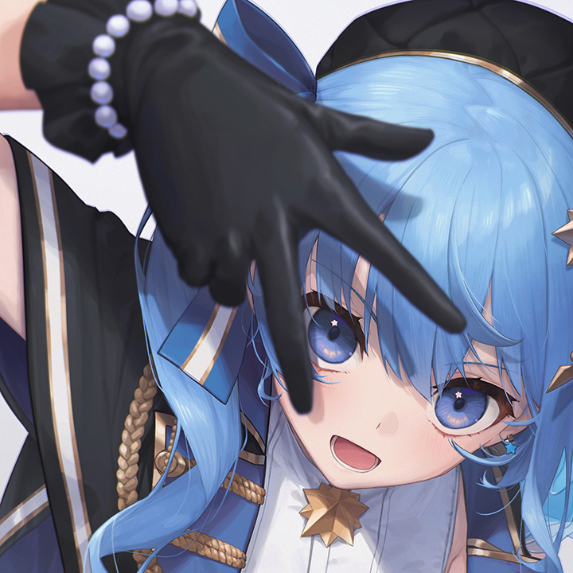
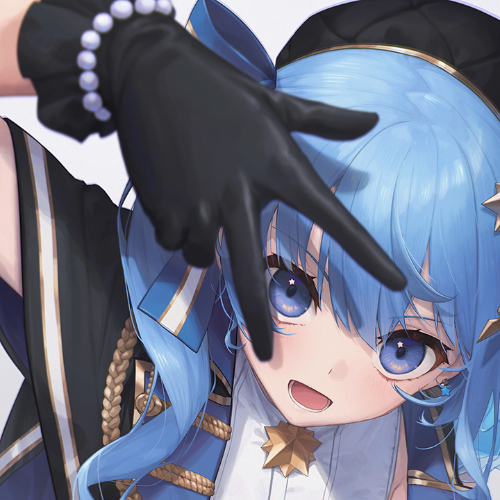

Hoshimachi Suisei
 

Profil
Hoshimachi Suisei adalah seorang Virtual YouTuber (VTuber) dan penyanyi di bawah agensi Hololive. Ia dikenal dengan suara vokalnya yang kuat serta dedikasinya dalam dunia musik.
Karier
- Memulai debut sebagai VTuber independen pada 2018 sebelum bergabung dengan Hololive.
- Menjadi VTuber pertama yang tampil di "THE FIRST TAKE" pada 2023.
- Mengadakan konser solo di Nippon Budokan pada 2024, menjadi VTuber pertama yang tampil di sana.
Fakta Menarik
- Suisei awalnya mendesain avatarnya sendiri sebelum mendapat model resmi.
- Dikenal sebagai pemain Tetris yang sangat berbakat.
- Berpartisipasi dalam berbagai kolaborasi musik, termasuk lagu tema untuk film anime.
- Mengidolakan penyanyi seperti LiSA dan ingin menjadi idol sejak kecil.